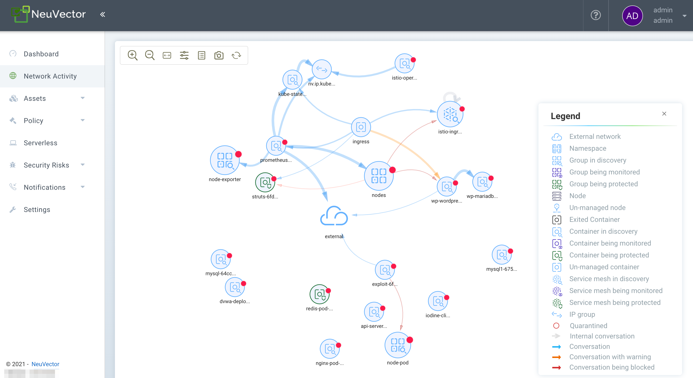
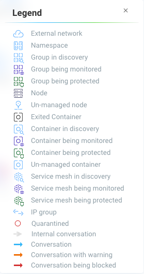

Navegando no Console
Acesso ao Console
O usuário e a senha padrão são admin.
Por favor, veja a primeira seção Básicos → Conectar ao Manager para opções de configuração, como desativar https, acessar o console através de um gateway de segurança corporativo que não permite a porta 8443, ou substituir o certificado autoassinado.
Menus e Navegação
Use o menu do lado esquerdo para navegar no seu SUSE® Security console. Observe que há configurações adicionais no canto superior direito para Perfil do Usuário e configuração Multi-Cluster.

Painel
O Painel mostra um resumo das pontuações de risco, eventos de segurança e protocolos de aplicação detectados por SUSE® Security. Ele também mostra detalhes de alguns desses eventos de segurança. Relatórios em PDF podem ser gerados a partir do Painel, que contêm gráficos detalhados e explicações.
Na parte superior do painel, há um resumo dos riscos de segurança no cluster. A ferramenta de chave inglesa ao lado da pontuação de risco geral pode ser clicada para abrir um assistente que o guiará através das etapas recomendadas para reduzir/melhorar a pontuação de risco. Passar o mouse sobre cada medidor de risco fornecerá uma descrição dele à direita e como melhorar a pontuação de risco. Veja também a seção de documentação separada Melhorando a Pontuação de Risco de Segurança.

-
Pontuação Geral de Risco de Segurança. Este é um resumo ponderado das áreas de risco individuais resumidas à direita, incluindo exposição ao Serviço, exposição de Ingress/Egress e riscos de exploração de vulnerabilidades. Clique na chave inglesa para melhorar a pontuação.
-
Pontuação de Risco de Exposição ao Serviço. Este é um indicador de quantos serviços estão protegidos por regras de lista branca e funcionando no modo Monitorar ou Proteger, onde o risco é mais baixo. Uma alta proporção de serviços no modo Descobrir significa que esses serviços não estão segmentados ou isolados por regras de lista branca.
-
Pontuação de Risco de Ingress/Egress. Este é um resumo ponderado de ameaças reais ou violações de rede detectadas nas conexões de ingress ou egress (fora do cluster), combinadas com conexões de ingress/egress permitidas. Conexões externas que são protegidas por regras de lista branca têm menor risco, mas ainda podem ser atacadas por ataques de rede embutidos. Nota: Uma lista de IPs de ingress e egress pode ser baixada da seção de detalhes de Ingress/Egress como um Relatório de Exposição.
-
Pontuação de Risco de Exploração de Vulnerabilidades. Este é o risco de exploração de vulnerabilidades em contêineres em execução. Serviços no modo Descobrir com vulnerabilidades de alta criticidade terão o maior impacto na pontuação, pois são os de maior risco. Se os serviços estão no modo Monitorar ou Proteger, mas ainda têm vulnerabilidades altas, eles estão protegidos por regras de rede e processo para identificar (e bloquear) atividades suspeitas, portanto, terão um peso menor na pontuação. Um aviso será exibido se o botão de Auto-Scan não estiver habilitado para varredura automática em tempo de execução.
Alguns dos gráficos são interativos, como mostrado abaixo com as setas verdes.

Alguns dos dados de eventos mostrados no painel têm limites, conforme descrito na seção de Relatórios.
Protocolos de Aplicação Detectados Este gráfico resume os protocolos de aplicação detectados em conexões ao vivo no cluster. A categoria ‘Other’ significa quaisquer protocolos HTTP não reconhecidos ou conexões TCP brutas. Você pode alternar entre os níveis de Cobertura de Aplicação e Volume de Aplicação.
-
A Cobertura da Aplicação é o número de conversas únicas de pod para pod detectadas entre os serviços de aplicação. Por exemplo, se o pod de serviço A se conecta ao pod de serviço B usando HTTP, isso conta como uma única conversa HTTP ‘conversation’, mas todas as conexões entre A e B contam como uma conversa.
-
O Volume da Aplicação é a atividade de rede medida em Gbytes para todos os serviços que utilizam esse protocolo.
Atividade de Rede
Isso fornece um mapa gráfico de seus contêineres e das conversas entre os contêineres. Ele também mostra conexões com outros recursos locais e externos. Nos modos Monitorar e Proteger, as violações são exibidas com linhas vermelhas ou amarelas para indicar que uma violação foi detectada.
|
Se um grande número de contêineres ou serviços estiver presente, a visualização será automaticamente definida como uma visualização de namespace (colapsada). Clique duas vezes em um ícone de namespace para expandi-lo. |
|
Esta exibição utiliza uma GPU local, se disponível, para acelerar os tempos de carregamento. Algumas GPUs do Windows têm problemas conhecidos, e o uso da GPU pode ser desativado na janela de Filtro Avançado (veja abaixo para Ferramentas). |
Algumas das ações possíveis são:
-
Encontrar recurso para ajudá-lo a localizar rapidamente objetos específicos pelo nome completo ou exato. Você pode ir para Política > Grupos para localizar:
-
Pods ou contêineres
-
Nós
-
Grupos
-
-
Mover objetos para melhor visualizar serviços e conversas
-
Clique em qualquer linha (seta) para ver mais detalhes, como protocolo/porta, último carimbo de data/hora e para adicionar ou editar uma regra (NOTA: ambos os pontos finais da conexão devem estar totalmente expandidos clicando duas vezes em cada um para ver os detalhes da conexão)
-
Clique em qualquer contêiner para ver detalhes e o ‘i’ para conexões em tempo real. Você também pode colocar um nó em quarentena a partir daqui. Clique com o botão direito em um contêiner para realizar ações.
-
Filtrar a visualização por protocolo ou pesquisar por namespace, grupo, contêiner (canto superior direito). Você pode adicionar múltiplos filtros à caixa de seleção.
-
Atualize o mapa para mostrar as conversas mais recentes.
-
Amplie ou reduza o zoom para alternar entre uma visualização lógica (todos os contêineres colapsados em um grupo de serviços) ou uma visualização física (todos os contêineres do mesmo serviço exibidos).
-
Ative/desative a exibição de componentes de orquestração, como balanceadores de carga (por exemplo, incorporados para Kubernetes ou Swarm).
-
(Ícone de Service Mesh) Clique duas vezes para expandir um pod em uma service mesh como Istio/Linkerd2 para mostrar o sidecar e os contêineres de carga de trabalho dentro do pod.
|
Os nomes dos grupos na visualização de Atividade de Rede são encurtados para facilitar a leitura. Nomes encurtados não são pesquisáveis. Para encontrar um grupo, use o nome completo listado em Política > Grupos. Por exemplo:
* Exibido na Atividade de Rede: Apenas o nome completo, |
O menu Ferramentas no canto superior esquerdo tem estas funções, da esquerda para a direita:
-
Ampliar/Reduzir o zoom
-
Encontrar recurso
-
Redefinir as exibições de ícones (se você os moveu)
-
Abrir a janela de Filtro Avançado (os filtros permanecem para a sessão de login do usuário)
-
Exibir/Ocultar a Legenda
-
Tirar uma captura de tela
-
Atualizar a Exibição de Atividade de Rede

Clicar com o botão direito em um contêiner exibe as seguintes ações:

Você pode visualizar sessões ativas, iniciar gravações de captura de pacotes e colocar em quarentena a partir daqui. Você também pode alterar o modo de proteção geral para o serviço (todos os contêineres desse serviço) aqui. As opções de expandir/recolher permitem simplificar ou expandir os objetos.
Os dados no mapa podem levar alguns segundos após a atividade da rede para serem exibidos.
Veja a explicação dos ícones da legenda na parte inferior desta página.
Ativos
Ativos exibe informações sobre Plataformas, Nós, Contêineres, Registros, Verificadores Sigstore (usados nas regras de Controle de Admissão) e Componentes do Sistema (SUSE® Security Controladores, Scanners e Aplicadores).
SUSE® Security inclui uma plataforma de gerenciamento de vulnerabilidades de ponta a ponta que pode ser integrada ao seu processo automatizado de CI/CD. Escaneie registros, imagens e contêineres em execução e nós de host em busca de vulnerabilidades. Os resultados para registros, nós e contêineres individuais podem ser encontrados aqui, enquanto resultados combinados e relatórios avançados podem ser encontrados no menu Riscos de Segurança.
SUSE® Security também executa automaticamente o relatório de segurança do Docker Bench e o Benchmark CIS do Kubernetes (se aplicável) em cada host e contêineres em execução.
Observe que o Status de todos os contêineres é mostrado em Ativos → Contêineres, que indica o modo de proteção SUSE® Security (Descobrir, Monitorar, Proteger). Se o contêiner for exibido com o estado 'Fechar', ele ainda estará no host, mas parado. Remover o contêiner o removerá do estado 'Fechar'.
Consulte a seção Escaneamento & Conformidade para detalhes adicionais, incluindo como usar o plug-in Jenkins SUSE® Security Scanner de Vulnerabilidades.
Associações
Isso exibe e gerencia a Política de Segurança em tempo de execução que determina quais comportamentos de rede de contêiner, processo e sistema de arquivos são PERMITIDOS e NEGADOS. Quaisquer conversas e atividades que não são explicitamente permitidas são registradas como violações por SUSE® Security. Este também é o local onde as regras de Controle de Admissão podem ser criadas.
Por favor, consulte a seção Política de Segurança destes documentos para uma explicação detalhada sobre o comportamento das regras e como editar ou criar regras.
Riscos de segurança
Isso possibilita investigações, triagens e a geração de relatórios customizáveis para o gerenciamento de vulnerabilidades e conformidade. Pesquise facilmente vulnerabilidades de imagem e descubra quais nós ou contêineres contêm essas vulnerabilidades. A filtragem avançada facilita a revisão dos resultados de varreduras e verificações de conformidade, além de fornecer relatórios personalizados.
Esses menus combinam os resultados das varreduras de vulnerabilidade em registros (imagem), nós e contêineres, bem como das verificações de conformidade, permitindo o gerenciamento integrado de vulnerabilidades e a geração de relatórios de ponta a ponta.
Notificações
É aqui que você pode ver os logs de Eventos de Segurança, Relatórios de Risco (por exemplo, Varredura) e Eventos gerais. SUSE® Security também suporta SYSLOG para integração com ferramentas como SPLUNK, além de notificações por webhook.
Security Events
Use a pesquisa ou o Filtro Avançado para localizar eventos específicos. O widget de linha do tempo na parte superior também pode ser ajustado usando os círculos à esquerda e à direita para alterar a janela de tempo. Você também pode adicionar facilmente regras (Política de Segurança) para permitir ou negar o evento detectado selecionando o botão Revisar Regra e implantando uma nova regra.
SUSE® Security monitora continuamente todos os contêineres em busca de ataques conhecidos, como DNS, DDoS, HTTP-smuggling, tunelamento, etc. Quando um ataque é detectado, ele é registrado aqui e bloqueado (se o contêiner/serviço estiver configurado para proteger), e o pacote é automaticamente capturado. Você pode visualizar os detalhes do pacote, por exemplo:

Regra de Negação Implícita Violada
As violações são conexões que violam as Regras da lista branca ou correspondem a uma Regra da lista negra. As violações detalhadas são capturadas e os IPs de origem podem ser investigados mais a fundo.
Outros eventos de segurança incluem elevações de privilégio, processos suspeitos ou atividade anormal do sistema de arquivos detectada em contêineres ou hosts.
Relatórios de Risco
A varredura de registro, varredura em tempo de execução e eventos de controle de admissão serão mostrados aqui. Além disso, os resultados de benchmarks CIS e verificações de conformidade serão exibidos.
Consulte a seção de Relatórios para detalhes adicionais e limites das exibições de eventos no console.
Categoria de
Configurações → Usuários e Funções
Adicione outros usuários aqui. Os usuários podem ser atribuídos a um papel de Administrador, um papel de Somente leitura ou um papel personalizado. No Kubernetes, os usuários podem ser atribuídos a um ou mais namespaces para acesso. Papéis personalizados também podem ser configurados aqui para usuários e Grupos (por exemplo, LDAP/AD) serem mapeados para os papéis. Consulte a seção usuários para detalhes de configuração.
Configurações → Configuração
Configure um nome de cluster exclusivo, novo modo de serviços e outras configurações aqui.
Se implantar em um cluster Rancher ou OpenShift, a autenticação pode ser habilitada para que usuários do Rancher ou do OpenShift possam fazer login no console do SUSE® Security com os RBACs associados. Para usuários do Rancher, um botão/link de conexão no console do Rancher permite que os administradores do Rancher abram e acessem diretamente o console SUSE® Security.
O Novo Modo de Serviço define qual modo de proteção qualquer novo serviço (aplicativos) previamente desconhecido ou indefinido em SUSE® Security será definido por padrão. Para ambientes de produção, não é recomendado definir isso como Descobrir.
O Modo de Política de Serviço de Rede, se habilitado, aplica o modo de política selecionado globalmente às regras de rede para todos os grupos, e o modo de política individual de cada Grupo se aplicará apenas às regras de processo e de arquivo.
A Promoção Automatizada de Modos de Grupo promove automaticamente o Modo de proteção de um Grupo (de Descobrir para Monitorar para Proteger) com base no tempo decorrido e critérios.
A Exclusão Automática de Grupos Não Utilizados é útil para a 'limpeza' automatizada dos grupos descobertos (e regras auto-criadas para) que não estão mais em uso, especialmente em ambientes de desenvolvimento de alta rotatividade. Consulte Política → Grupos para a lista de grupos em SUSE® Security. Remover Grupos não utilizados limpará a lista de Grupos e todas as regras associadas a esses grupos.
O X-FORWARDED-FOR habilita/desabilita o uso desses cabeçalhos na aplicação das regras de rede SUSE® Security. Isso é útil para reter o IP de origem original de uma conexão de entrada para que possa ser usado na aplicação das regras de rede. Habilitar significa que o IP de origem será mantido. Veja abaixo uma explicação detalhada.
Vários webhooks podem ser configurados para serem usados em Regras de Resposta para notificações personalizadas. As opções de formato de webhook incluem Slack, JSON e pares chave-valor.
Um Proxy de Registro pode ser configurado se a conexão de varredura do seu registro entre o controlador e o registro precisar passar por um proxy.
Configure a integração SIEM através de SYSLOG, incluindo tipos de eventos, a porta etc. Você também pode optar por enviar eventos para os logs do pod do controlador em vez de ou além do syslog. Observe que esses eventos serão enviados apenas para o log do pod do controlador principal (não para todos os logs dos pods do controlador em uma implantação de múltiplos controladores).
Uma integração com IBM Security Advisor e QRadar pode ser estabelecida.
Importar/Exportar o arquivo de Política de Segurança. Você pode configurar SSO para SAML e LDAP/AD aqui também. Veja a seção de Integração Empresarial para detalhes de configuração. Importante! Tenha cuidado ao importar o arquivo de configuração. A importação sobrescreverá as configurações existentes. Se você importar um arquivo ‘policy only’, os Grupos e Regras da Política serão sobrescritos. Se você importar um arquivo com configurações ‘all’, então a Política, os Usuários e as Configurações serão sobrescritos. Observe que a senha original do usuário ‘admin’ do seu Controlador atual também será sobrescrita com a senha do administrador original no arquivo importado.
O Relatório de Uso e os logs de Coleta podem ser solicitados pela sua equipe de suporte SUSE® Security.
Detalhes do Comportamento X-FORWARDED-FOR
Em um cluster Kubernetes, um aplicativo pode ser exposto ao exterior do cluster por meio de serviços NodePort, LoadBalancer ou Ingress. Esses serviços normalmente substituem o IP de origem ao realizar o NAT de origem (SNAT) nos pacotes. Como o IP de origem original é mascarado, isso impede SUSE® Security de reconhecer que a conexão é, na verdade, do 'externo'.
Para preservar o endereço IP de origem original, o usuário precisa adicionar a seguinte linha aos serviços expostos, na seção 'spec' do balanceador de carga ou controlador de ingress voltado para o exterior. (Ref: https://kubernetes.io/docs/tutorials/services/source-ip/)
"externalTrafficPolicy":"Local"Muitas implementações de serviços LoadBalancer e controladores de Ingress adicionarão a linha X-FORWARDED-FOR ao cabeçalho da solicitação HTTP para comunicar o verdadeiro IP de origem aos aplicativos de backend. Este produto pode reconhecer este conjunto de cabeçalhos HTTP, identificar o IP de origem original e aplicar a política de acordo com isso.
Essa melhoria criou alguns problemas inesperados em algumas configurações. Se a linha acima foi adicionada aos serviços expostos e as políticas de rede SUSE® Security foram criadas de maneira a pressupor que as conexões de rede venham de serviços de proxy/ingress internos, visto que agora identificamos que as conexões são oriundas do 'externo' para o cluster, o tráfego normal do aplicativo pode acionar alertas ou ser bloqueado se os aplicativos forem colocados no modo 'Proteger'.
Um interruptor está disponível para desativar esse recurso. Desativá-lo instrui SUSE® Security a não identificar que a conexão é oriunda do 'externo' por meio dos cabeçalhos X-FORWARDED-FOR. Por padrão, isso está habilitado, e o cabeçalho X-FORWARDED-FOR é usado na aplicação de políticas. Para desativá-lo, vá para Configurações → Configuração e desative a opção "Correspondência de política baseada em X-Forwarded-For".
Configurações → LDAP/AD, SAML e OpenID Connect
SUSE® Security suporta integração com LDAP/AD, SAML e OpenID Connect para SSO e mapeamento de grupos de usuários. Veja a seção Integração Empresarial para detalhes de configuração.
Gerenciamento de Múltiplos Clusters
Você pode gerenciar múltiplos SUSE® Security clusters (por exemplo, múltiplos clusters Kubernetes executando SUSE® Security em diferentes nuvens ou localmente) selecionando um cluster mestre e unindo clusters remotos a ele. Cada cluster remoto também pode ser gerenciado individualmente. Regras de segurança podem ser propagadas para múltiplos clusters por meio do uso de configurações de Política Federada.
Descrições de Ícones na Legenda > Atividade da Rede
Você pode alternar a Legenda on/off na caixa de ferramentas do mapa de Atividade da Rede.

Aqui está o que os ícones significam:
Rede externa
Esta é qualquer rede fora do SUSE® Security cluster. Isso pode incluir acesso público à internet ou outras redes internas.
Grupo/Contêiner/Mesh de Serviço em descoberta
Este contêiner está em modo de descoberta, onde as conexões para/dele são aprendidas e regras de lista branca serão criadas automaticamente.
Grupo/Contêiner/Mesh de Serviço sendo monitorado
Este contêiner está em modo de monitoramento, onde as violações serão registradas, mas não bloqueadas.
Grupo/Contêiner/Mesh de Serviço sendo protegido
Este contêiner está em modo de proteção, onde as violações serão bloqueadas.
Grupo de Contêineres
Isso representa um grupo de contêineres em um serviço. Use isso para fornecer uma visão mais abstrata se houver muitas instâncias de contêineres para um serviço/aplicativo (ou seja, da mesma imagem).
Contêiner não gerenciado
Este contêiner foi detectado, mas não está em um nó com um SUSE® Security enforcer nele. Isso também pode representar alguns serviços do sistema.